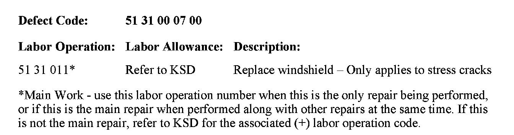

Body - Windshield Damage Analysis
SI B51 35 08Body Equipment
January 2009
Technical Service
SUBJECT
Cracked or Damaged Windshields
MODEL
All models
SITUATION
The windshield may become cracked or damaged for a variety of reasons. While the windshield requires repair or replacement, it is important to take note of the following guidelines regarding what types of damage may or may not be covered by the BMW New Vehicle Warranty.
CAUSE
Windshield damage is typically caused by one of the following:
1. Outside influence typically stone chips in nearly all cases
2. Excessive force applied such as levering out the A-pillar trim
3. Stress crack due to heavy torsional loads on the vehicle's body or an incorrectly-fitted windshield (least common cause)
PROCEDURE
When evaluating a cracked or damaged windshield to determine whether it is eligible to be claimed under warranty, it is necessary to determine the root cause of the damage. Reviewing the following possible causes will help to determine the root cause.
Outside Influence
^ An outside influence is responsible for the damage if:
1. One or more chips are present on the outside of the glass along the crack;
2. A crack started from anywhere other than an outside edge.
^ Run a non-permanent felt tip pen or small marker over the length of the damaged area. Even very minor surface damage will be felt.
^ Often when a small stone chip occurs, the subsequent crack takes time to develop, as the vehicle is subject to normal torsional loads or temperature fluctuations.
^ Any damage due to an outside influence will not be covered under warranty.
Excessive force
^ A windshield may become damaged due to excessive force being applied while performing other repairs, such as levering out the A-pillar trim or removing a rear view mirror.
^ If the windshield is damaged as a result of excessive force being applied, warranty consideration will not be given.
Stress crack
^ Under very isolated circumstances, a stress crack may form due to a combination of glass position and heavy torsional loads on the body of the vehicle.
^ These cracks always start from an outside edge of the glass.
^ Most often the cracks begin at one of the corners of the windshield.
^ Stress cracks typically occur within the first year or 10,000 miles of the vehicle's service life.
Additional Notes:
Only OEM BMW windshields may be considered for a warranty claim where a stress crack is the root cause. If a non BMW windshield was installed in the vehicle, any resulting damage (i.e., cracks, water leaks, etc.) will not be covered. BMW windshields can be identified by a BMW Roundel stamped on the glass in one of the lower corners.
If the damage to the glass is due to an outside influence, very often the glass can be repaired as opposed to being replaced. For additional information on this repair and recommended repair kits, refer to Parts bulletin 51 09 06.
WARRANTY INFORMATION

Covered under the terms of the BMW New Vehicle Limited Warranty.

Disclaimer